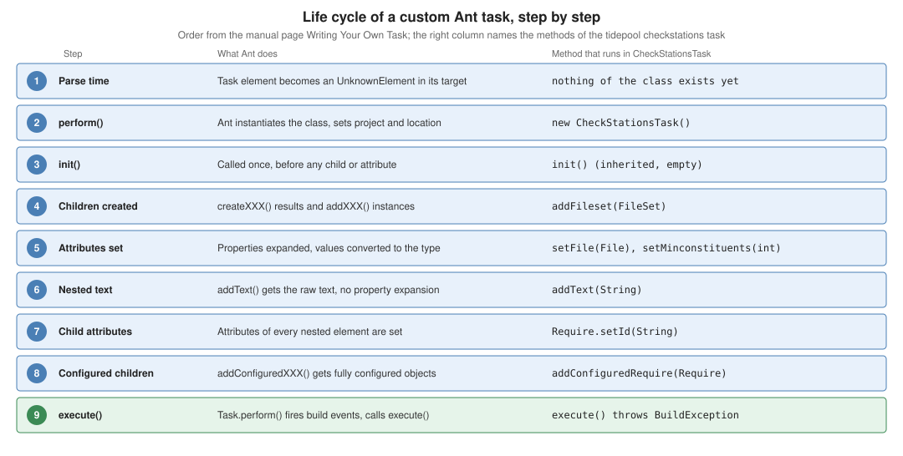

Writing Custom Ant Tasks
|
This content was generated with the assistance of AI and should be verified against the official documentation before being relied on in production. |
This page is written against Apache Ant 1.10.18. Every example was run on JDK 26 on 2026-10-16 with the Ant 1.10.18
distribution unpacked in a scratch directory and the ant launch script on the PATH. The task is compiled with
release="21", so its class files target Java 21, and it is compiled against the ant.jar of that same distribution.
Paths in console output were shortened to /work/... and $ANT_HOME. The scenario is the tidepool project used across
this section, here as a small data-quality task for the data/stations.csv file that the other modules of tidepool read.
Ant’s own tasks are Java classes, and so are yours: there is no plug-in descriptor, no annotation and no code generator. A
class with a public execute() method and a few set... methods becomes an XML element after one <taskdef>. That is why
custom tasks are the cheapest way to extend Ant, and also why the tool has no equivalent of the Maven plug-in descriptor or the
Gradle task-input annotations: everything is found by naming conventions and reflection. The page walks through those
conventions, builds the <checkstations> task step by step, runs it, breaks it on purpose to collect the real error
messages, and finishes with two ways to test it. Writing macros instead of Java is covered on
Macros & Presets; custom conditions, selectors and
data types are on
Custom Types, Conditions & Selectors;
bundling a task in a library that other builds can load by namespace is on
Antlibs & Namespaces; and running a task outside
a build file is on Embedding Ant.
The conventions Ant looks for
A task is any class that Ant can instantiate through a public no-argument constructor and that offers a public
void execute() method. The usual way to get that is to extend org.apache.tools.ant.Task, which supplies the project, the
location in the build file, the task name and the logging methods. A class that extends nothing also works: Ant wraps it in a
TaskAdapter that calls execute() by reflection (the official tutorial starts with such a class and then moves to
Task).
Ant never asks the class for a list of its attributes. It looks at the public methods, using these rules from the manual page Writing Your Own Task:
| Build file contains | Method Ant looks for | Notes |
|---|---|---|
attribute |
|
|
text between the start and end tag |
|
Properties are not expanded in the text; call |
nested element |
|
|
nested element of a type registered with |
|
The type is the interface or base class, for example |
nested tasks |
implement |
A task container cannot have any other nested element. |
the task runs |
|
Called through |
Several setters for the same attribute are allowed only in the sense that Ant calls exactly one of them: a String setter
always loses against a more specific one, and when more than one remains the choice depends on the JVM, so do not write
them. The same holds for several create, add and addConfigured methods for one element name.
The life cycle of one task instance
The task object does not exist while the build file is being read. The parser turns the element into an UnknownElement;
only when the target runs does Ant instantiate the class, create the children, set the attributes and call execute():

Four consequences follow, and every one of them is a classic bug when forgotten:
-
The constructor is too early.
getProject()returnsnullin the constructor; use it from the setters or fromexecute(). -
A new instance is created every time the task runs. If
target1andtarget2both depend ontarget3, the commandant target1 target2runs the tasks oftarget3twice, each time with a fresh object. State kept in fields lives for one execution only; state that must survive goes into a project property or reference. -
addConfiguredXsees finished objects.addXreceives the child right after its constructor,addConfiguredXafter its attributes and its own children were handled. Validation of a child belongs inaddConfiguredX. -
Attributes arrive in no useful order. Do not rely on
setFilerunning beforesetReport; check combinations inexecute().
The tidepool task
<checkstations> validates the station files that the tidepool engine reads (data/stations.csv, one station per row
with id, name, latitude, longitude and a semicolon-separated list of constituents). It is deliberately free of
dependencies other than Ant, so that the task JAR stands alone. The contract is:
| Part | Meaning |
|---|---|
|
One station file; a |
nested |
More files, selected with the patterns described on Paths, Filesets & Patterns. |
|
An |
|
A |
|
An enumerated value, |
|
The name of a property that receives the number of problems. |
nested |
A station id that must be present in the checked files. |
nested text |
A description, logged at verbose level; properties are expanded. |
The checks themselves are plain Java: five columns per row, latitude within [-90, 90], longitude within [-180, 180], no duplicate ids, enough constituents, every required id present. The complete source follows; the sections after it take it apart.
package io.tidepool.ant;
import java.io.File;
import java.io.IOException;
import java.nio.charset.StandardCharsets;
import java.nio.file.Files;
import java.util.ArrayList;
import java.util.HashSet;
import java.util.List;
import java.util.Set;
import org.apache.tools.ant.BuildException;
import org.apache.tools.ant.DirectoryScanner;
import org.apache.tools.ant.Project;
import org.apache.tools.ant.Task;
import org.apache.tools.ant.types.EnumeratedAttribute;
import org.apache.tools.ant.types.FileSet;
/** Validates tidepool station files. */
public class CheckStationsTask extends Task {
/** Values of the "report" attribute. */
public static class ReportMode extends EnumeratedAttribute {
@Override
public String[] getValues() {
return new String[] {"summary", "full"};
}
}
/** Nested {@code <require id="..."/>} element. */
public static class Require {
private String id;
public void setId(String id) {
this.id = id;
}
public String getId() {
return id;
}
}
private File file;
private final List<FileSet> filesets = new ArrayList<>();
private final List<Require> required = new ArrayList<>();
private int minConstituents = 1;
private boolean failOnError = true;
private String resultProperty;
private ReportMode report;
private String description = "";
// ---- attributes -------------------------------------------------
public void setFile(File file) {
this.file = file;
}
public void setMinconstituents(int minConstituents) {
this.minConstituents = minConstituents;
}
public void setFailonerror(boolean failOnError) {
this.failOnError = failOnError;
}
public void setResultproperty(String resultProperty) {
this.resultProperty = resultProperty;
}
public void setReport(ReportMode report) {
this.report = report;
}
// ---- nested text and elements ----------------------------------
public void addText(String text) {
description += getProject().replaceProperties(text);
}
public void addFileset(FileSet fileset) {
filesets.add(fileset);
}
public void addConfiguredRequire(Require require) {
if (require.getId() == null) {
throw new BuildException("<require> needs an id attribute", getLocation());
}
required.add(require);
}
// ---- execution --------------------------------------------------
@Override
public void execute() throws BuildException {
if (file == null && filesets.isEmpty()) {
throw new BuildException("Set the file attribute or nest a <fileset>", getLocation());
}
log("Loaded by " + getClass().getClassLoader() + "@"
+ Integer.toHexString(System.identityHashCode(getClass().getClassLoader())), Project.MSG_DEBUG);
if (!description.isBlank()) {
log(description.strip(), Project.MSG_VERBOSE);
}
List<File> inputs = new ArrayList<>();
if (file != null) {
inputs.add(file);
}
for (FileSet fs : filesets) {
DirectoryScanner ds = fs.getDirectoryScanner(getProject());
for (String name : ds.getIncludedFiles()) {
inputs.add(new File(ds.getBasedir(), name));
}
}
int problems = 0;
Set<String> seen = new HashSet<>();
for (File input : inputs) {
log("Checking " + input.getName(), Project.MSG_VERBOSE);
problems += check(input, seen);
}
for (Require r : required) {
if (!seen.contains(r.getId())) {
log("Required station " + r.getId() + " is missing", Project.MSG_ERR);
problems++;
}
}
if (report != null && "full".equals(report.getValue())) {
log("Stations seen: " + String.join(",", new java.util.TreeSet<>(seen)), Project.MSG_INFO);
}
if (resultProperty != null) {
getProject().setNewProperty(resultProperty, Integer.toString(problems));
}
if (problems == 0) {
log(inputs.size() + " file(s), " + seen.size() + " station(s): OK");
} else if (failOnError) {
throw new BuildException(problems + " problem(s) found in station data", getLocation());
} else {
log(problems + " problem(s) found in station data", Project.MSG_WARN);
}
}
private int check(File input, Set<String> seen) {
List<String> lines;
try {
lines = Files.readAllLines(input.toPath(), StandardCharsets.UTF_8);
} catch (IOException e) {
throw new BuildException("Cannot read " + input + " (" + e.getClass().getSimpleName() + ")", e, getLocation());
}
int problems = 0;
for (int i = 1; i < lines.size(); i++) { // line 0 is the header
String[] f = lines.get(i).split(",", -1);
String where = input.getName() + ":" + (i + 1);
log("Row " + where + " -> " + lines.get(i), Project.MSG_DEBUG);
if (f.length != 5) {
log(where + " expected 5 columns, found " + f.length, Project.MSG_ERR);
problems++;
continue;
}
if (!seen.add(f[0])) {
log(where + " duplicate station id " + f[0], Project.MSG_ERR);
problems++;
}
problems += range(where, "latitude", f[2], -90, 90);
problems += range(where, "longitude", f[3], -180, 180);
int n = f[4].isEmpty() ? 0 : f[4].split(";").length;
if (n < minConstituents) {
log(where + " has " + n + " constituent(s), at least " + minConstituents + " required",
Project.MSG_WARN);
problems++;
}
}
return problems;
}
private int range(String where, String what, String text, double min, double max) {
try {
double v = Double.parseDouble(text);
if (v < min || v > max) {
log(where + " " + what + " " + v + " is outside [" + min + ", " + max + "]", Project.MSG_ERR);
return 1;
}
return 0;
} catch (NumberFormatException e) {
log(where + " " + what + " is not a number: '" + text + "'", Project.MSG_ERR);
return 1;
}
}
}Attributes and type conversion
Before Ant calls a setter it expands every ${property} in the value. The type of the setter’s argument then decides how the
text is converted, so a task gets typed values and an early, uniform error for bad ones:
| Setter argument | What Ant passes |
|---|---|
|
The literal value after property expansion. |
|
|
|
The first character of the value. |
any other primitive or its wrapper ( |
The converted number; a value that is not a number fails the build before |
|
An absolute path stays as it is, a relative one is resolved against the project’s base directory. |
|
The value resolved like a |
|
The value split at |
|
The class with that name, loaded from the system class loader. |
any class with a public constructor taking one |
A new instance created from the value. |
a subclass of |
An instance whose |
a Java |
The constant with that declared name (a |
Since Ant 1.8 a property evaluation can also return a non-string object, which is assigned directly to a setter of the matching type; that needs a custom property helper, so a task that wants to allow it should say so in its documentation.
The report attribute of <checkstations> uses EnumeratedAttribute, the minconstituents attribute an int, and
failonerror a boolean. The next build file sets all of them in unusual spellings, to show that attribute names are
case-insensitive and that off is a legal false:
<checkstations FILE="data/bad.csv" minConstituents="2" failonerror="off"
resultproperty="problems"/>
<echo>problems=${problems}</echo>$ ant -f conv.xml
Buildfile: /work/tidepool-ant/conv.xml
run:
[checkstations] bad.csv:3 latitude 137.8 is outside [-90.0, 90.0]
[checkstations] bad.csv:4 latitude is not a number: 'north'
[checkstations] bad.csv:4 has 1 constituent(s), at least 2 required
[checkstations] bad.csv:5 duplicate station id SF
[checkstations] bad.csv:5 has 0 constituent(s), at least 2 required
[checkstations] 5 problem(s) found in station data
[echo] problems=5
BUILD SUCCESSFUL
Total time: 0 secondsA wrong value is rejected by Ant itself, with the build-file line, before execute() is reached. Two of the messages you
will meet most often (the others are in the section on classic mistakes):
<checkstations file="data/stations.csv" minconstituents="two"/>
<checkstations file="data/stations.csv" report="verbose"/>BUILD FAILED
/work/tidepool-ant/mistakes.xml:27: Can't convert value 'two' to type class java.lang.Integer, reason: class java.lang.NumberFormatException with message 'For input string: "two"'
Total time: 0 seconds
BUILD FAILED
/work/tidepool-ant/mistakes.xml:31: verbose is not a legal value for this attribute
Total time: 0 secondsThe EnumeratedAttribute message names no attribute and no list of legal values. A task that wants a better one can catch
the problem itself by taking a String and checking it, at the price of losing the uniform handling.
Nested text
addText receives the text between the tags, including the white space around it, and Ant does not expand properties in it.
The tutorial’s advice is to expand them yourself with getProject().replaceProperties(text), which is what the task does;
calling strip() on the result, to drop the white space around the text, is this page’s own addition. The ok target of the demo build file has both a nested text and a property
reference in it; running with -v shows that the text arrived and that ${ant.project.name} was expanded:
<?xml version="1.0" encoding="UTF-8"?>
<project name="demo" default="ok" basedir=".">
<property name="jar.file" location="build/tidepool-ant.jar"/>
<target name="declare">
<taskdef name="checkstations" classname="io.tidepool.ant.CheckStationsTask"
classpath="${jar.file}"/>
</target>
<target name="ok" depends="declare">
<property name="min" value="2"/>
<checkstations resultproperty="problems" minconstituents="${min}" report="full">
Station files for ${ant.project.name}
<fileset dir="data" includes="stations.csv"/>
<require id="SF"/>
<require id="HNL"/>
</checkstations>
<echo>problems=${problems}</echo>
</target>
<target name="bad" depends="declare">
<checkstations file="data/bad.csv" minconstituents="2"/>
</target>
<target name="bad.lenient" depends="declare">
<checkstations file="data/bad.csv" minconstituents="2" failonerror="false"
resultproperty="problems">
<require id="HNL"/>
</checkstations>
<echo>problems=${problems}</echo>
</target>
</project>$ ant -v -f demo.xml ok
declare:
ok:
[checkstations] Station files for demo
[checkstations] Checking stations.csv
[checkstations] Stations seen: BOS,HNL,SF
[checkstations] 1 file(s), 3 station(s): OK
[echo] problems=0
BUILD SUCCESSFUL
Total time: 0 seconds(The first lines of the verbose output, which describe the Java version and the parsing of the build file, were left out.)
Nested elements
The task has two kinds of nested elements: the standard FileSet and its own Require. The two idioms are visible in the
source:
-
addFileset(FileSet)is anaddmethod: Ant instantiates theFileSetitself and hands it over. The task keeps the object and asks it for aDirectoryScannerinexecute(), never earlier, because the properties and references that a fileset uses may only be defined at that point. -
addConfiguredRequire(Require)is anaddConfiguredmethod: Ant first setsidon the newRequireand only then calls the method, which is why the task can reject a<require>without an id right there. WithaddRequirethe object would be empty at that moment.Requireis apublic staticnested class: the manual says that foraddandaddConfiguredthe class needs a public no-argument constructor, and a non-static inner class has none.
The createX alternative creates the child inside the task and returns it, so the child can be any class, and the task keeps
a reference without needing a constructor Ant can call. The tutorial uses it for its <message> element. All three
styles produce the same XML.
A nested element handled by a method named just add or addConfigured, with an interface or base class as its argument
type, accepts every type that the build file registered with <typedef> and that is assignable to it. This is how a task
can accept the conditions and selectors that
Custom Types, Conditions & Selectors
shows how to write.
Two errors belong to this part. An element the task has no method for, and a <require> without id:
<checkstations file="data/stations.csv">
<station id="SF"/>
</checkstations>BUILD FAILED
/work/tidepool-ant/mistakes.xml:39: checkstations doesn't support the nested "station" element.
Total time: 0 seconds<checkstations file="data/stations.csv">
<require/>
</checkstations>BUILD FAILED
/work/tidepool-ant/mistakes.xml:45: <require> needs an id attribute
Total time: 0 secondsThe first message comes from Ant; the second from the BuildException thrown in addConfiguredRequire, which passes the
task’s own getLocation(): line 45 is the <checkstations> element, not the <require/> on line 46.
Filesets, paths and properties inside a task
A fileset is the most common nested element and the way to take file selection away from the task. The second official
tutorial, Tasks using Properties, Filesets & Paths, builds a <find> task in three steps that <checkstations> repeats in
small form: first a nested FileSet (addFileset, then fs.getDirectoryScanner(getProject()) in execute(), and the
file names from getIncludedFiles() relative to getBasedir()), then the switch to a nested Path, which accepts filesets,
dirsets, filelists and other paths and does the scanning for you (addPath(Path), then path.list() returns absolute names),
and finally the question of how a task returns a list, since Ant properties are plain strings. The tutorial also separates
the checks from the work in a validate() method called first in execute(), which <checkstations> does inline.
Setting a property is the usual way for a task to return a result, and the Project offers two methods with different meaning:
-
getProject().setNewProperty(name, value)follows the immutability rule of Ant: if the property already exists, the value stays. That is how the<property>task behaves, and the tutorial’s<find>uses it. -
getProject().setProperty(name, value)overwrites the value. The next task of this page uses it for a loop variable, which has to change on every round.
The experiment presets the property before running the task:
<property name="problems" value="preset"/>
<checkstations file="data/bad.csv" failonerror="false" resultproperty="problems"/>
<echo>problems=${problems}</echo>$ ant -f loc.xml props
Buildfile: /work/tidepool-ant/loc.xml
props:
[checkstations] bad.csv:3 latitude 137.8 is outside [-90.0, 90.0]
[checkstations] bad.csv:4 latitude is not a number: 'north'
[checkstations] bad.csv:5 duplicate station id SF
[checkstations] bad.csv:5 has 0 constituent(s), at least 1 required
[checkstations] 4 problem(s) found in station data
[echo] problems=preset
BUILD SUCCESSFUL
Total time: 0 secondsThe task found four problems and the property kept preset. Properties are explained on
Properties.
A task that contains tasks: TaskContainer
A task that implements TaskContainer receives the tasks nested in it through addTask(Task). They are already configured
when execute() runs, but only then, which is what makes a loop possible: the container sets a property, performs the nested
tasks, sets the next value and performs them again. The manual stresses one detail: call perform() on the nested tasks, not
execute(), so that build events are generated.
<foreachstation> runs its nested tasks once per station id in a file. It is not part of the tidepool build, it is here to
show the interface; the loop variable is set with setProperty, which overwrites, because it must change on every round.
package io.tidepool.ant;
import java.io.File;
import java.io.IOException;
import java.nio.charset.StandardCharsets;
import java.nio.file.Files;
import java.util.ArrayList;
import java.util.List;
import org.apache.tools.ant.BuildException;
import org.apache.tools.ant.Task;
import org.apache.tools.ant.TaskContainer;
/** Runs the nested tasks once per station id, with the id in a property. */
public class ForEachStationTask extends Task implements TaskContainer {
private File file;
private String property = "station.id";
private final List<Task> tasks = new ArrayList<>();
public void setFile(File file) {
this.file = file;
}
public void setProperty(String property) {
this.property = property;
}
@Override
public void addTask(Task task) {
tasks.add(task);
}
@Override
public void execute() throws BuildException {
if (file == null) {
throw new BuildException("The file attribute is required", getLocation());
}
try {
List<String> lines = Files.readAllLines(file.toPath(), StandardCharsets.UTF_8);
for (String line : lines.subList(1, lines.size())) {
getProject().setProperty(property, line.substring(0, line.indexOf(',')));
for (Task task : tasks) {
task.perform();
}
}
} catch (IOException e) {
throw new BuildException("Cannot read " + file, e, getLocation());
}
}
}<?xml version="1.0" encoding="UTF-8"?>
<project name="container" default="each" basedir=".">
<taskdef name="foreachstation" classname="io.tidepool.ant.ForEachStationTask"
classpath="build/tidepool-ant.jar"/>
<target name="each">
<foreachstation file="data/stations.csv">
<echo>station ${station.id}</echo>
</foreachstation>
</target>
</project>$ ant -f container.xml
Buildfile: /work/tidepool-ant/container.xml
each:
[echo] station SF
[echo] station BOS
[echo] station HNL
BUILD SUCCESSFUL
Total time: 0 secondsA task container cannot also have other nested elements, which is why <foreachstation> has none. Ant’s own <parallel>,
<sequential> and <macrodef> are task containers. Most loops in real builds are written with the for task of Ant-Contrib
or with a macro, covered on
Antlibs & Namespaces and
Macros & Presets; a task container is the way to write
one that Ant itself does not have.
Source: Apache Ant manual: TaskContainer
Logging and the verbosity levels
Prefer log to System.out in a task. Ant redirects the streams while a task runs and turns what it sees into log events,
but with a fixed level: standard output becomes info and standard error becomes warning, so neither can be filtered by
-q or -v the way a deliberate priority can. The experiment below has a task that writes to both streams and to log;
with -q the standard error line survives and the other two disappear (the manual adds that a listener or logger must never
touch the streams at all, because that can recurse).
import org.apache.tools.ant.Task;
public class Say extends Task {
@Override
public void execute() {
System.out.println("to stdout");
System.err.println("to stderr");
log("via log()");
}
}$ ant -f out1.xml
[say] to stdout
[say] to stderr
[say] via log()
$ ant -q -f out1.xml
[say] to stderrThe log methods of Task take the text and an optional priority. The priority is
a constant of org.apache.tools.ant.Project, and the command-line flag decides how far down the list a build prints:
| Constant | Visible with | Use it for |
|---|---|---|
|
always |
Problems that are the reason for a failure. |
|
default, |
Things the user should know although the build goes on. |
|
default |
What a quiet build should still say: what was done and the result. |
|
|
Per-file or per-step details. |
|
|
Internal state for people who debug the task. |
<checkstations> logs the verdict at the default level, each finding at error or warning level, the file names at verbose level
and each row, plus the class loader, at debug level. The lines are prefixed with the task name ([checkstations]); the
taskname attribute, which every task has, changes the prefix without any code:
$ ant -f loc.xml taskname
Buildfile: /work/tidepool-ant/loc.xml
taskname:
[stations] 1 file(s), 3 station(s): OK
BUILD SUCCESSFUL
Total time: 0 secondsThe same failing file with the default level, with -q (which keeps only the warning and error lines and the failure), and
with -d (only the task’s own lines are shown here, the debug output of Ant itself is much longer):
$ ant -f demo.xml bad
Buildfile: /work/tidepool-ant/demo.xml
declare:
bad:
[checkstations] bad.csv:3 latitude 137.8 is outside [-90.0, 90.0]
[checkstations] bad.csv:4 latitude is not a number: 'north'
[checkstations] bad.csv:4 has 1 constituent(s), at least 2 required
[checkstations] bad.csv:5 duplicate station id SF
[checkstations] bad.csv:5 has 0 constituent(s), at least 2 required
BUILD FAILED
/work/tidepool-ant/demo.xml:22: 5 problem(s) found in station data
Total time: 0 seconds
$ ant -q -f demo.xml bad
[checkstations] bad.csv:3 latitude 137.8 is outside [-90.0, 90.0]
[checkstations] bad.csv:4 latitude is not a number: 'north'
[checkstations] bad.csv:4 has 1 constituent(s), at least 2 required
[checkstations] bad.csv:5 duplicate station id SF
[checkstations] bad.csv:5 has 0 constituent(s), at least 2 required
BUILD FAILED
/work/tidepool-ant/demo.xml:22: 5 problem(s) found in station data
Total time: 0 seconds
$ ant -d -f demo.xml bad
[checkstations] Loaded by AntClassLoader[/work/tidepool-ant/build/tidepool-ant.jar]@32d992b2
[checkstations] Checking bad.csv
[checkstations] Row bad.csv:2 -> SF,San Francisco,37.8063,-122.4659,M2:0.55:120;S2:0.13:150
[checkstations] Row bad.csv:3 -> OAK,Oakland,137.8,-122.27,M2:0.5:100;S2:0.1:20
[checkstations] bad.csv:3 latitude 137.8 is outside [-90.0, 90.0]
[checkstations] Row bad.csv:4 -> BOS,Boston,north,-71.0503,M2:1.35:15
[checkstations] bad.csv:4 latitude is not a number: 'north'
[checkstations] bad.csv:4 has 1 constituent(s), at least 2 required
[checkstations] Row bad.csv:5 -> SF,San Francisco again,37.8063,-122.4659,
[checkstations] bad.csv:5 duplicate station id SF
[checkstations] bad.csv:5 has 0 constituent(s), at least 2 requiredTwo more things from the log: the task logs one line per problem and then fails with one summary, which is the pattern users
expect from javac or <junitlauncher>; and when the task is not the only one running, the prefix tells which task spoke.
Reporting errors with BuildException
BuildException is the one way to stop a build. It has constructors for a message, a message and a cause, a cause alone and
each of those with a Location. Four rules cover most of the design:
-
Say what is wrong and where. The message should name the offending value and the file or element; Ant adds the build-file line.
execute()does not need to passgetLocation(): when the exception carries no location,Task.performfills in the task’s own. A task withNoLocas its only code proves that:loc/src/NoLoc.javaimport org.apache.tools.ant.BuildException; import org.apache.tools.ant.Task; public class NoLoc extends Task { @Override public void execute() { throw new BuildException("thrown without a location"); } }$ ant -f loc.xml noloc Buildfile: /work/tidepool-ant/loc.xml noloc: BUILD FAILED /work/tidepool-ant/loc.xml:5: thrown without a location Total time: 0 seconds -
Keep the cause. Wrap the original exception as the second argument. Without
-vonly the message is printed; with-vthe stack trace and the "Caused by" are shown. The message of<checkstations>for a missing file names the exception class, because the message of aNoSuchFileExceptionis only the path and would repeat it:$ ant -q -f mistakes.xml not.found BUILD FAILED /work/tidepool-ant/mistakes.xml:51: Cannot read /work/tidepool-ant/data/nowhere.csv (NoSuchFileException) Total time: 0 seconds $ ant -v -f mistakes.xml not.found not.found: [checkstations] Checking nowhere.csv BUILD FAILED /work/tidepool-ant/mistakes.xml:51: Cannot read /work/tidepool-ant/data/nowhere.csv (NoSuchFileException) at io.tidepool.ant.CheckStationsTask.check(CheckStationsTask.java:148) at io.tidepool.ant.CheckStationsTask.execute(CheckStationsTask.java:119) at org.apache.tools.ant.UnknownElement.execute(UnknownElement.java:299) at java.base/jdk.internal.reflect.DirectMethodHandleAccessor.invoke(DirectMethodHandleAccessor.java:104) at java.base/java.lang.reflect.Method.invoke(Method.java:565) ... Caused by: java.nio.file.NoSuchFileException: /work/tidepool-ant/data/nowhere.csv at java.base/sun.nio.fs.UnixException.translateToIOException(UnixException.java:92) at java.base/sun.nio.fs.UnixException.rethrowAsIOException(UnixException.java:108) ... -
Let the user choose between failing and warning. The
failonerrorattribute is a convention of most Ant tasks. Thebad.lenienttarget ofdemo.xmlruns the same file withfailonerror="false"and one extra<require>: the task logs every problem, warns once, sets the property, and the build ends green. The exit code ofant, which a CI system reads, is 1 for the failing run and 0 for the lenient one:$ ant -f demo.xml bad.lenient Buildfile: /work/tidepool-ant/demo.xml declare: bad.lenient: [checkstations] bad.csv:3 latitude 137.8 is outside [-90.0, 90.0] [checkstations] bad.csv:4 latitude is not a number: 'north' [checkstations] bad.csv:4 has 1 constituent(s), at least 2 required [checkstations] bad.csv:5 duplicate station id SF [checkstations] bad.csv:5 has 0 constituent(s), at least 2 required [checkstations] Required station HNL is missing [checkstations] 6 problem(s) found in station data [echo] problems=6 BUILD SUCCESSFUL Total time: 0 seconds $ ant -q -f demo.xml bad; echo $? 1 $ ant -q -f demo.xml bad.lenient > /dev/null; echo $? 0 -
Validate in
execute(), not in the setters. The setters run in an unspecified order and before the other attributes and children are known; the "no input at all" check of<checkstations>therefore sits at the top ofexecute()(the message is in the list of classic mistakes below).
A BuildException raised in a nested task that was started with <antcall>, <ant> or <subant> is reported with
"The following error occurred while executing this line", as the next page shows for an antlib. For a task that is called
from other Java code and wants to treat a failure as a value, catch the exception and read getLocation() and getCause().
Building it
The task needs Ant’s classes to compile: the only dependency is ant.jar. (The ant-launcher.jar next to it is needed as soon
as code creates an Ant Project, as the tests below do.) ${ant.core.lib} is a
built-in property that holds the absolute path of ant.jar; the build file below uses ${ant.home}/lib/ant.jar, which is
the same file and survives running the build in an IDE that does not set ant.core.lib. The <javac> attributes are explained on
Compiling Java, and building the JAR with
<jar> on Packaging Archives.
<?xml version="1.0" encoding="UTF-8"?>
<project name="tidepool-ant" default="check" basedir=".">
<property name="ant.lib" location="${ant.home}/lib"/>
<property name="classes.dir" location="build/classes"/>
<property name="jar.file" location="build/tidepool-ant.jar"/>
<target name="compile" description="Compile the task">
<mkdir dir="${classes.dir}"/>
<javac srcdir="tidepool-ant/src/main/java" destdir="${classes.dir}"
release="21" includeantruntime="false" debug="true"
encoding="UTF-8">
<classpath>
<pathelement location="${ant.lib}/ant.jar"/>
</classpath>
</javac>
</target>
<target name="jar" depends="compile" description="Package the task">
<jar destfile="${jar.file}" basedir="${classes.dir}"/>
</target>
<target name="declare" depends="jar">
<taskdef name="checkstations" classname="io.tidepool.ant.CheckStationsTask"
classpath="${jar.file}"/>
</target>
<target name="check" depends="declare" description="Validate the station data">
<checkstations file="data/stations.csv" minconstituents="2" report="full"/>
</target>
</project>$ ant check
Buildfile: /work/tidepool-ant/build.xml
compile:
[mkdir] Created dir: /work/tidepool-ant/build/classes
[javac] Compiling 2 source files to /work/tidepool-ant/build/classes
jar:
[jar] Building jar: /work/tidepool-ant/build/tidepool-ant.jar
declare:
check:
[checkstations] Stations seen: BOS,HNL,SF
[checkstations] 1 file(s), 3 station(s): OK
BUILD SUCCESSFUL
Total time: 0 secondsThe check target compiled the two task classes, built the JAR, declared the task and ran it on the good data. The <taskdef> is in a
target after the JAR is built, the pattern of the official tutorial’s second example; the same file could not declare the task at
the top level, because the JAR does not exist when the parser reaches the <taskdef>.
The compile step is where a task author most often loses time. Without a class path that contains ant.jar the compiler
sees no Ant classes:
$ ant -f nocp.xml
Buildfile: /work/tidepool-ant/nocp.xml
compile:
[mkdir] Created dir: /work/tidepool-ant/build/nocp
[javac] Compiling 2 source files to /work/tidepool-ant/build/nocp
[javac] /work/tidepool-ant/tidepool-ant/src/main/java/io/tidepool/ant/CheckStationsTask.java:12: error: package org.apache.tools.ant does not exist
[javac] import org.apache.tools.ant.BuildException;
[javac] ^
[javac] ...
[javac] location: class ForEachStationTask
[javac] 58 errors
BUILD FAILED
/work/tidepool-ant/nocp.xml:6: Compile failed; see the compiler error output for details.
Total time: 0 secondsWith includeantruntime left to its default the same sources compile, but Ant says why that is a poor idea: it lets the class
path of the running Ant leak into the compile, so the result depends on where the build runs:
$ ant -f withruntime.xml
[javac] /work/tidepool-ant/withruntime.xml:5: warning: 'includeantruntime' was not set, defaulting to build.sysclasspath=last; set to false for repeatable builds
[javac] Compiling 2 source files to /work/tidepool-ant/build/withruntimeAlways set includeantruntime="false" and name the JAR you compile against.
Declaring the task
<taskdef> adds a task to the project, using the same attributes as <typedef>, which also defines data types, with
org.apache.tools.ant.TaskAdapter as the adapter and org.apache.tools.ant.Task as the target type. The attributes that matter
for a custom task:
| Attribute | Meaning |
|---|---|
|
The element name and the class that implements it; needed unless |
|
Where to find the class. Without one, Ant looks in its own class path, which means |
|
The name of a class loader that is shared by every definition with the same name. Since Ant 1.5. |
|
Load many definitions at once from a properties file ( |
|
The XML namespace the definitions are placed in, see Antlibs & Namespaces. Since Ant 1.6. |
|
|
|
Wrap a class that is not a task (for example a |
One class loader per definition, and loaderref
Every <taskdef> with a classpath gets its own AntClassLoader. Two definitions of the same JAR, or two tasks in one JAR that
have to share code, then see different copies of every class: no shared static fields, no access to package-private members,
and ClassCastException when one passes an object to the other. The manual gives the order of preference: put the tasks in
an antlib and load it with resource, which uses one class loader, and if that is not possible give every <taskdef> the
same loaderref name, with identical class paths (the order of the elements counts). The task logs its class loader at debug
level, so the difference can be seen:
<?xml version="1.0" encoding="UTF-8"?>
<project name="loader" default="separate" basedir=".">
<property name="jar.file" location="build/tidepool-ant.jar"/>
<target name="separate">
<taskdef name="check.a" classname="io.tidepool.ant.CheckStationsTask" classpath="${jar.file}"/>
<taskdef name="check.b" classname="io.tidepool.ant.CheckStationsTask" classpath="${jar.file}"/>
<check.a file="data/stations.csv"/>
<check.b file="data/stations.csv"/>
</target>
<target name="shared">
<taskdef name="check.a" classname="io.tidepool.ant.CheckStationsTask" classpath="${jar.file}"
loaderref="tidepool.loader"/>
<taskdef name="check.b" classname="io.tidepool.ant.CheckStationsTask" classpath="${jar.file}"
loaderref="tidepool.loader"/>
<check.a file="data/stations.csv"/>
<check.b file="data/stations.csv"/>
</target>
</project>$ ant -d -f loader.xml separate
[check.a] Loaded by AntClassLoader[/work/tidepool-ant/build/tidepool-ant.jar]@1810399e
[check.b] Loaded by AntClassLoader[/work/tidepool-ant/build/tidepool-ant.jar]@2b98378d
$ ant -d -f loader.xml shared
[check.a] Loaded by AntClassLoader[/work/tidepool-ant/build/tidepool-ant.jar]@1810399e
[check.b] Loaded by AntClassLoader[/work/tidepool-ant/build/tidepool-ant.jar]@1810399e(The identity hash after the at sign changes from run to run; the equality of the two numbers is the point.)
A task that is declared in ANT_HOME/lib or in ~/.ant/lib needs no classpath at all, because those JARs are on Ant’s own
class path, but a JAR there is global to every build of the user. The same is true for a JAR passed with -lib. Those
locations, and the way to find a task automatically through a namespace, are the subject of
Antlibs & Namespaces. The manual also describes a
third, permanent way, which is to edit default.properties in the org.apache.tools.ant.taskdefs package so that the task
looks built-in; that means modifying Ant’s own JAR and is not recommended for anything but contributions to Ant.
Source: Apache Ant manual: Taskdef task and Typedef task
Classic mistakes and their real messages
The messages below come from mistakes.xml, run with -q so that only the failure is shown. They are worth reading once
because every one of them is also a common cause of a call on the user mailing list.
The task is used but never declared. The message lists the three usual causes, one of which, a <presetdef> or <macrodef>
defined after the point of use, is a stumbling block in its own right:
<checkstations file="data/stations.csv"/>BUILD FAILED
/work/tidepool-ant/mistakes.xml:6: Problem: failed to create task or type checkstations
Cause: The name is undefined.
Action: Check the spelling.
Action: Check that any custom tasks/types have been declared.
Action: Check that any <presetdef>/<macrodef> declarations have taken place.
Total time: 0 secondsThe <taskdef> has no classpath, and the JAR is not in ANT_HOME/lib, ~/.ant/lib or on -lib. Note that the class loader
that is named in the message has an empty path:
<taskdef name="checkstations" classname="io.tidepool.ant.CheckStationsTask"/>BUILD FAILED
/work/tidepool-ant/mistakes.xml:15: taskdef class io.tidepool.ant.CheckStationsTask cannot be found
using the classloader AntClassLoader[]
Total time: 0 secondsThe class name is misspelled; the path in the message is that of the JAR, which proves the class path was found:
<taskdef name="checkstops" classname="io.tidepool.ant.CheckStopsTask" classpath="${jar.file}"/>BUILD FAILED
/work/tidepool-ant/mistakes.xml:19: taskdef class io.tidepool.ant.CheckStopsTask cannot be found
using the classloader AntClassLoader[/work/tidepool-ant/build/tidepool-ant.jar]
Total time: 0 secondsThe task is declared and used with a misspelled attribute. Note that the name fil is reported as it was written; names
that differ only in case from a setter are accepted (see the conversion experiment above):
<checkstations fil="data/stations.csv"/>BUILD FAILED
/work/tidepool-ant/mistakes.xml:23: checkstations doesn't support the "fil" attribute
Total time: 0 secondsThe task needs an input and has none; this is the check in execute() and the line is that of the task element:
<checkstations/>BUILD FAILED
/work/tidepool-ant/mistakes.xml:35: Set the file attribute or nest a <fileset>
Total time: 0 secondsA bad number, a bad enumeration value, an unknown nested element and a nested element without its required attribute were shown
in the sections above. The full file with all eleven targets is mistakes.xml.
<?xml version="1.0" encoding="UTF-8"?>
<project name="mistakes" default="no.taskdef" basedir=".">
<property name="jar.file" location="build/tidepool-ant.jar"/>
<target name="no.taskdef">
<checkstations file="data/stations.csv"/>
</target>
<target name="declare">
<taskdef name="checkstations" classname="io.tidepool.ant.CheckStationsTask"
classpath="${jar.file}"/>
</target>
<target name="no.classpath">
<taskdef name="checkstations" classname="io.tidepool.ant.CheckStationsTask"/>
</target>
<target name="wrong.classname" depends="declare">
<taskdef name="checkstops" classname="io.tidepool.ant.CheckStopsTask" classpath="${jar.file}"/>
</target>
<target name="bad.attribute" depends="declare">
<checkstations fil="data/stations.csv"/>
</target>
<target name="bad.int" depends="declare">
<checkstations file="data/stations.csv" minconstituents="two"/>
</target>
<target name="bad.enum" depends="declare">
<checkstations file="data/stations.csv" report="verbose"/>
</target>
<target name="missing.file" depends="declare">
<checkstations/>
</target>
<target name="bad.element" depends="declare">
<checkstations file="data/stations.csv">
<station id="SF"/>
</checkstations>
</target>
<target name="require.noid" depends="declare">
<checkstations file="data/stations.csv">
<require/>
</checkstations>
</target>
<target name="not.found" depends="declare">
<checkstations file="data/nowhere.csv"/>
</target>
</project>Two more mistakes belong to the next page: a task defined without the uri that the prefix in the build file expects fails with
the "name is undefined" message even though the JAR is on the class path, and a <taskdef> of a resource that does not exist
only prints a warning unless onerror="failall" is set. Both are run on
Antlibs & Namespaces.
Source: Apache Ant manual: Taskdef task
Testing a task
A task is a small program that is driven by a build file, so the natural test is another build file. Ant’s own source tree tests its tasks in two ways, and both are available to you.
AntUnit
Apache AntUnit is an antlib (a library of Ant tasks) that tests Ant tasks with Ant. The manual of the project says it
removes JUnit completely and comes with predefined assertion tasks. The <au:antunit> task starts a new Ant project for each
build file, finds the targets whose names start with test, and for each of them runs the target setUp (if there is one),
the test target, and the target tearDown (if there is one); an AssertionFailedException is a failure, any other exception is
an error. AntUnit 1.5.0, the release of this page, needs Ant 1.10.13 or later and adds the ability to run the tests with a
different class path than the rest of the build.
The test file for the tidepool task checks the good file, the problem count, the failure of the build, the log of a missing station and the missing-input message:
<?xml version="1.0" encoding="UTF-8"?>
<project name="checkstations-test" default="testGoodFile" basedir=".."
xmlns:au="antlib:org.apache.ant.antunit">
<taskdef name="checkstations" classname="io.tidepool.ant.CheckStationsTask"
classpath="build/tidepool-ant.jar"/>
<target name="testGoodFile">
<au:logcapturer/>
<checkstations file="data/stations.csv" resultproperty="problems"/>
<au:assertPropertyEquals name="problems" value="0"/>
<au:assertLogContains text="3 station(s): OK"/>
</target>
<target name="testBadFileCountsProblems">
<checkstations file="data/bad.csv" minconstituents="2" failonerror="false"
resultproperty="problems"/>
<au:assertPropertyEquals name="problems" value="5"/>
</target>
<target name="testBadFileFailsTheBuild">
<au:expectfailure expectedMessage="5 problem(s) found in station data">
<checkstations file="data/bad.csv" minconstituents="2"/>
</au:expectfailure>
</target>
<target name="testMissingStationIsReported">
<au:logcapturer/>
<checkstations file="data/stations.csv" failonerror="false">
<require id="LAX"/>
</checkstations>
<au:assertLogContains text="Required station LAX is missing" level="error"/>
</target>
<target name="testNeedsAnInput">
<au:expectfailure expectedMessage="Set the file attribute or nest a <fileset>">
<checkstations/>
</au:expectfailure>
</target>
</project><?xml version="1.0" encoding="UTF-8"?>
<project name="run-antunit" default="test" basedir="."
xmlns:au="antlib:org.apache.ant.antunit">
<target name="test">
<au:antunit>
<fileset dir="test" includes="*.test.xml"/>
<au:plainlistener/>
</au:antunit>
</target>
</project>The antlib JAR is passed on the command line with -lib, which puts it on Ant’s class path so that the namespace
antlib:org.apache.ant.antunit is found (the mechanism is explained on
Antlibs & Namespaces). The JAR was downloaded from
Maven Central (org.apache.ant:ant-antunit:1.5.0) and its SHA-1 checked.
$ ant -lib lib/ant-antunit-1.5.0.jar -f run-antunit.xml
Buildfile: /work/tidepool-ant/run-antunit.xml
test:
[au:antunit] Build File: /work/tidepool-ant/test/checkstations.test.xml
[au:antunit] Tests run: 5, Failures: 0, Errors: 0, Time elapsed: 0,022 sec
[au:antunit] Target: testNeedsAnInput took 0,001 sec
[au:antunit] Target: testBadFileFailsTheBuild took 0,005 sec
[au:antunit] Target: testBadFileCountsProblems took 0,005 sec
[au:antunit] Target: testGoodFile took 0,002 sec
[au:antunit] Target: testMissingStationIsReported took 0,001 sec
BUILD SUCCESSFUL
Total time: 0 seconds(The decimal commas in the elapsed times come from the locale of the machine that ran the example.) A wrong expectation, here
4 instead of 5 problems, is reported with the line of the assertion and the message of the assertion task:
$ ant -lib lib/ant-antunit-1.5.0.jar -f run-failing.xml
Buildfile: /work/tidepool-ant/run-failing.xml
test:
[au:antunit] Build File: /work/tidepool-ant/failing/wrong.test.xml
[au:antunit] Tests run: 5, Failures: 1, Errors: 0, Time elapsed: 0,022 sec
[au:antunit] Target: testNeedsAnInput took 0 sec
[au:antunit] Target: testBadFileFailsTheBuild took 0,005 sec
[au:antunit] Target: testBadFileCountsProblems FAILED
[au:antunit] at line 17, column 57
[au:antunit] Message: Expected property 'problems' to have value '4' but was '5'
[au:antunit] took 0,004 sec
[au:antunit] Target: testGoodFile took 0,002 sec
[au:antunit] Target: testMissingStationIsReported took 0,001 sec
BUILD FAILED
/work/tidepool-ant/run-failing.xml:5: Tests failed with 1 failure and 0 errors
Total time: 0 secondsThe test file sets basedir=".." because it lives in test/ while the data and the JAR are relative to the project root; a
test file that uses another base directory fails with the "class cannot be found" message of the previous section, which was
how the first failing attempt of this page ended.
Source: Apache AntUnit
JUnit and BuildFileRule
The second way is the one in the official tutorial: a JUnit test that loads a build file and runs its targets through
org.apache.tools.ant.BuildFileRule, a JUnit 4 rule from ant-testutil.jar. The methods that matter are
configureProject(String), executeTarget(String), getLog() (messages at info level and above), getFullLog() (every level),
getOutput(), getError() and getProject(). The ant-testutil.jar of this Ant version is in the lib directory of the
distribution (and on Maven Central as org.apache.ant:ant-testutil:1.10.18).
package io.tidepool.ant;
import static org.hamcrest.CoreMatchers.containsString;
import static org.hamcrest.MatcherAssert.assertThat;
import static org.junit.Assert.assertEquals;
import static org.junit.Assert.assertThrows;
import org.apache.tools.ant.BuildException;
import org.apache.tools.ant.BuildFileRule;
import org.junit.Before;
import org.junit.Rule;
import org.junit.Test;
public class CheckStationsTaskTest {
@Rule
public final BuildFileRule buildRule = new BuildFileRule();
@Before
public void setUp() {
buildRule.configureProject("demo.xml");
}
@Test
public void goodFileIsAccepted() {
buildRule.executeTarget("ok");
assertThat(buildRule.getLog(), containsString("3 station(s): OK"));
assertEquals("0", buildRule.getProject().getProperty("problems"));
}
@Test
public void badFileFailsTheBuild() {
BuildException e = assertThrows(BuildException.class, () -> buildRule.executeTarget("bad"));
assertEquals("5 problem(s) found in station data", e.getMessage());
assertThat(buildRule.getFullLog(), containsString("duplicate station id SF"));
}
@Test
public void lenientModeCountsProblems() {
buildRule.executeTarget("bad.lenient");
assertEquals("6", buildRule.getProject().getProperty("problems"));
}
}The class path of the test has to contain ant.jar, ant-launcher.jar, ant-testutil.jar, the compiled task, the compiled test and JUnit
4.13.2 with Hamcrest 1.3 (from Maven Central). The tests run through the JUnitCore runner of JUnit 4 here, to keep the example
free of the <junit> task; the same test classes can be run by the <junit> task described on
Testing with JUnit & junitlauncher,
which is what the tutorial does.
<?xml version="1.0" encoding="UTF-8"?>
<project name="tidepool-ant-junit" default="test" basedir=".">
<property name="ant.lib" location="${ant.home}/lib"/>
<path id="test.classpath">
<pathelement location="${ant.lib}/ant.jar"/>
<pathelement location="${ant.lib}/ant-launcher.jar"/>
<pathelement location="${ant.lib}/ant-testutil.jar"/>
<pathelement location="build/classes"/>
<pathelement location="build/test-classes"/>
<fileset dir="lib" includes="junit-*.jar,hamcrest-*.jar"/>
</path>
<target name="compile.test">
<mkdir dir="build/test-classes"/>
<javac srcdir="tidepool-ant/src/test/java" destdir="build/test-classes"
release="21" includeantruntime="false" classpathref="test.classpath"/>
</target>
<target name="test" depends="compile.test">
<java classname="org.junit.runner.JUnitCore" classpathref="test.classpath"
fork="true" failonerror="true">
<arg value="io.tidepool.ant.CheckStationsTaskTest"/>
</java>
</target>
</project>$ ant -f junit.xml
Buildfile: /work/tidepool-ant/junit.xml
compile.test:
[mkdir] Created dir: /work/tidepool-ant/build/test-classes
[javac] Compiling 1 source file to /work/tidepool-ant/build/test-classes
test:
[java] JUnit version 4.13.2
[java] ...
[java] Time: 0,166
[java]
[java] OK (3 tests)
[java]
BUILD SUCCESSFUL
Total time: 0 secondsThe first attempt of this page forgot ant-launcher.jar, and BuildFileRule fails inside Project.init because that
class refers to org.apache.tools.ant.launch.AntMain:
$ ant -f junit-nolauncher.xml
Buildfile: /work/tidepool-ant/junit-nolauncher.xml
compile.test:
test:
[java] JUnit version 4.13.2
[java] .E.E.E
[java] Time: 0,013
[java] There were 3 failures:
[java] 1) lenientModeCountsProblems(io.tidepool.ant.CheckStationsTaskTest)
[java] java.lang.NoClassDefFoundError: org/apache/tools/ant/launch/AntMain
[java] at java.base/java.lang.ClassLoader.defineClass1(Native Method)
[java] ...
[java] Tests run: 3, Failures: 3
[java]
BUILD FAILED
/work/tidepool-ant/junit-nolauncher.xml:21: Java returned: 1
Total time: 0 secondsTwo cautions about the official tutorial when you copy from it: its listing of the test class is abbreviated (the imports for
assertEquals and fail are missing, testMessage has no @Test, and testFail compares the message with "fail requested"
while the task throws "Fail requested."), and it uses AntAssert, which is deprecated in this release; the test above
uses Hamcrest’s containsString instead. The rule is a JUnit 4 rule, so a JUnit 5 build keeps JUnit 4 on the test class path
(through the vintage engine or JUnitCore as here), or uses AntUnit.
Debugging a task
Start with -v and -d, which are free: the log lines of the task, Ant’s own report of how it resolved the definitions and the
stack trace of a BuildException with a cause. For anything deeper the tutorial recommends running Ant under a Java debugger
with Ant built with debug information. Its breakpoints for Ant 1.8 are org.apache.tools.ant.launch.Launcher.main() and
org.apache.tools.ant.UnknownElement.execute(); to stop where an attribute or the text is set, first stop in your own
execute() so that the class is loaded, and then set the breakpoints in the setters. The debugger can also be attached through
ANT_OPTS.
The same extension in Maven and Gradle
| Maven | Gradle | |
|---|---|---|
Unit of extension |
a plug-in with one |
a task class ( |
Parameters |
fields annotated |
properties with input and output annotations, set in the build script |
Entry point |
|
the method annotated |
Failure |
|
any exception, or |
Logging |
|
|
Test |
the Maven plug-in testing harness and integration tests with |
unit tests and TestKit |
The Ant task is the lightest of the three: no packaging descriptor and no metadata, but also no up-to-date checks, no declared inputs and outputs and no way for the tool to know what the task reads. Gradle’s tasks and Maven’s plug-ins are written on Gradle: Writing Custom Tasks and Maven: Writing Plugins; the equivalence of concepts is in Comparing Ant, Maven & Gradle.
Where older material is outdated
-
Tutorials and books written for Ant 1.5 and earlier have the
<taskdef>withoutloaderrefand a single class path for the task and its helper types; the pattern still works but is the main cause ofClassCastExceptionbetween tasks of the same JAR. Use one antlib or oneloaderref. -
BuildFileTest, a JUnit 3 base class, and the tests written with it predateBuildFileRule, the JUnit 4 rule that the official tutorial uses; both classes are still inant-testutil.jarof this release. -
Samples that extend
Taskand callSystem.out.printlnwork but bypass the log levels and the loggers. -
Examples that compile tasks with
<javac>withoutincludeantruntime="false"get the warning shown above. -
Ant 1.10 requires Java 8; a task that compiles for
release="21", as here, will not load on an older JVM. Match the release to the oldest JVM that will run the build.
References
-
Apache Ant manual: Writing Your Own Task
-
Apache Ant manual: Tutorial: Writing Tasks
-
Apache Ant manual: Tutorial: Tasks using Properties, Filesets & Paths
-
Apache Ant manual: Taskdef task
-
Apache Ant manual: Typedef task
-
Apache Ant manual: API documentation: Task
-
Apache Ant manual: API documentation: Project
-
Apache AntUnit: AntUnit